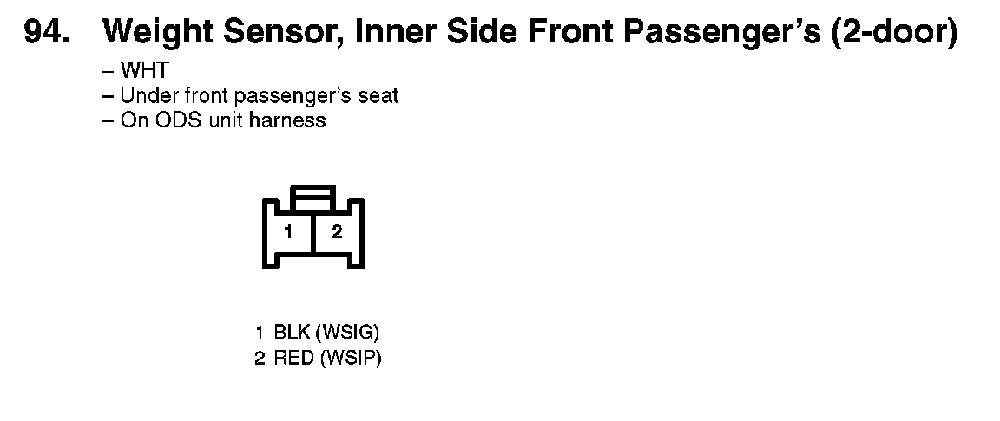
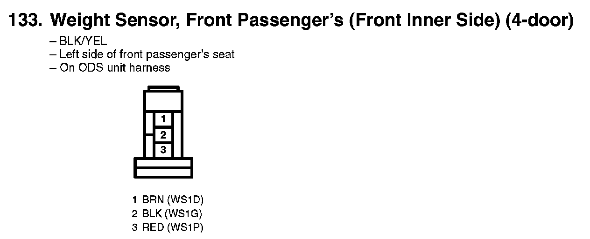
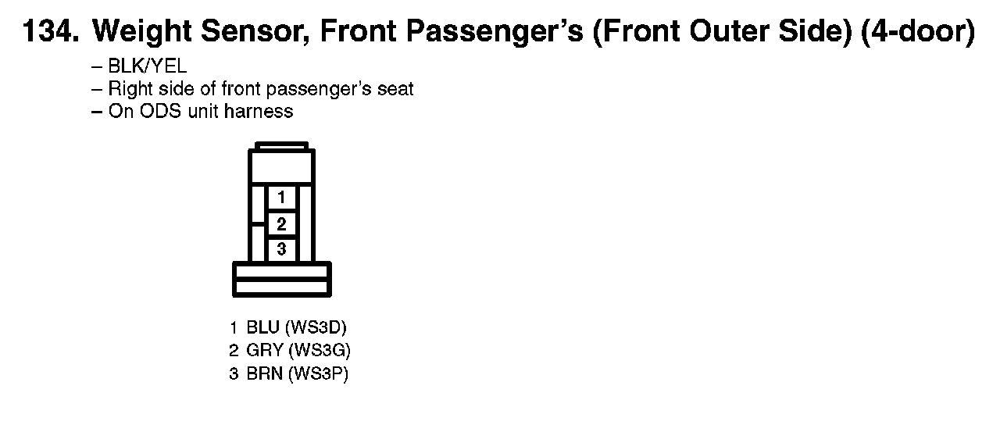
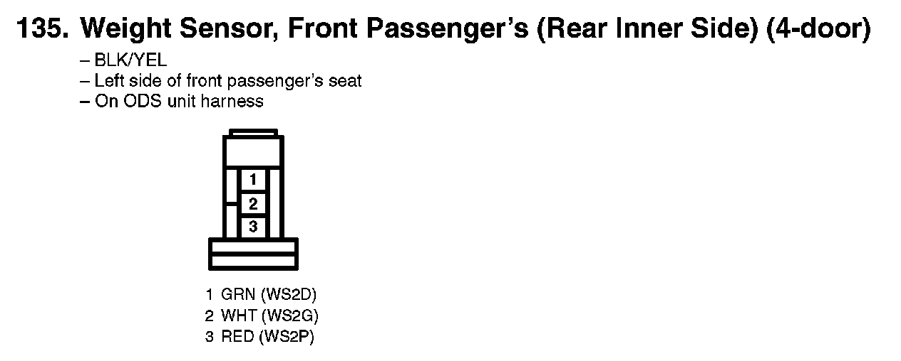
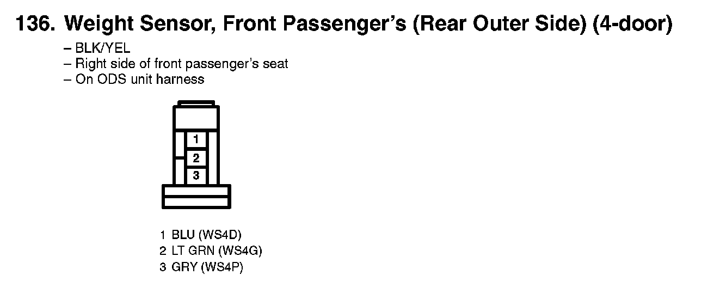
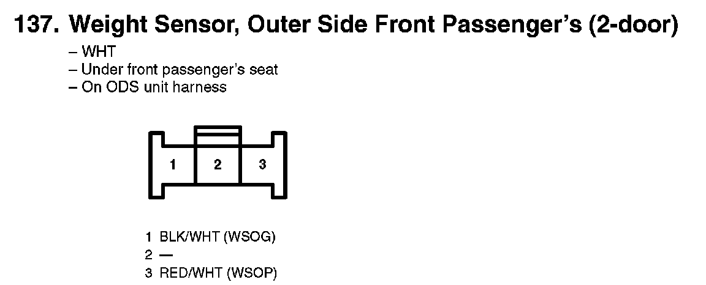

Seat Occupant Sensor: Diagrams
94. Weight Sensor, Inner Side Front Passenger's (2-door):

133. Weight Sensor, Front Passenger's (Front Inner Side) (4-door):

134. Weight Sensor, Front Passenger's (Front Outer Side) (4-door):

135. Weight Sensor, Front Passenger's (Rear Inner Side) (4-door):

136. Weight Sensor, Front Passenger's (Rear Outer Side) (4-door):

137. Weight Sensor, Outer Side Front Passenger's (2-door):
